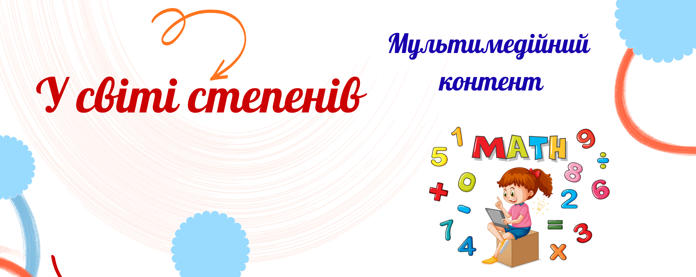

У світі степенів

Привіт, семикласники!
Ласкаво просимо до "онлайн-світу степенів" – світу, де за допомогою цікавих інтерактивних завдань ви закріпите свої знання про степінь з натуральним показником та його властивості.
Ласкаво просимо до "онлайн-світу степенів" – світу, де за допомогою цікавих інтерактивних завдань ви закріпите свої знання про степінь з натуральним показником та його властивості.